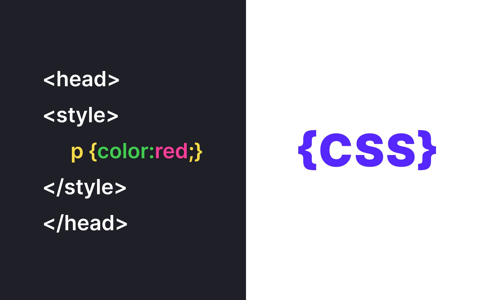

CSS Styling Techniques
CSS (Cascading Style Sheets) is used to style and layout web pages. It can control the color, font, and spacing of elements, as well as their positioning and behavior. Using CSS, we can transform simple HTML structures into visually appealing web pages.

Ordered List (What we learned):
- CSS selectors target HTML elements to apply styles to them.
- CSS properties control aspects like color, padding, margins, and layout.
- CSS can be applied in three ways: inline, internal, and external.
- Using classes and IDs, we can apply different styles to various elements efficiently.
Unordered List (CSS Techniques We Explored):
- Flexbox: A modern CSS layout technique that helps with responsive design.
- Grid Layout: A powerful layout system for building complex page structures.
- Transitions and Animations: Adding motion to elements for user interactivity.
- Media Queries: Making the page responsive to different screen sizes.
JavaScript Functions
JavaScript functions are blocks of reusable code that perform a specific task. Functions can take input (parameters), process the input, and return an output. They are essential for organizing code and improving its reusability and maintainability.
Ordered List (What we learned):
- Functions in JavaScript are declared using the
function keyword.
- Functions can have parameters, which allow passing information to them.
- Functions can return values using the
return keyword.
- JavaScript functions can be invoked (called) multiple times with different arguments.
Unordered List (Key JavaScript Function Concepts):
- Function Declarations: A simple way to define a function.
- Function Expressions: Functions can also be assigned to variables.
- Arrow Functions: A more concise syntax for writing functions in JavaScript.
- Anonymous Functions: Functions that are not named and are often used as arguments.